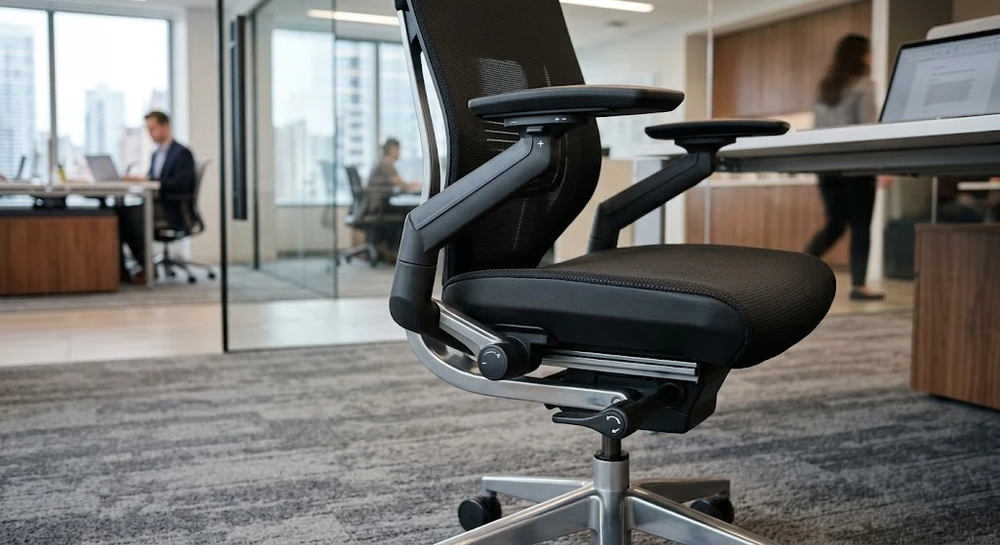

Kursi kantor ergonomis adalah kursi kerja yang dirancang khusus mengikuti postur tubuh manusia, dilengkapi fitur penyesuaian komprehensif seperti lumbar support (penopang tulang punggung bawah), ketinggian dan kedalaman dudukan, serta sandaran tangan yang dapat diatur fleksibel sesuai kebutuhan pengguna saat bekerja di depan meja kantor.
Bagi tim General Affairs (GA) dan procurement perusahaan, pengadaan kursi kerja sering kali terjebak pada persepsi visual semata. Selama sebuah kursi terlihat modern, memiliki bantalan hitam, dan dilengkapi roda putar, kursi tersebut kerap langsung dilabeli sebagai kursi ergonomis. Faktanya, label ergonomis pada katalog penjualan sering kali disematkan secara sepihak tanpa memenuhi standar biomekanika kerja yang sebenarnya.
Membeli kursi kerja yang salah bukan hanya merugikan anggaran belanja modal perusahaan, melainkan berdampak langsung pada penurunan produktivitas, meningkatnya angka izin sakit karena nyeri pinggang, hingga penurunan moral kerja harian karyawan.
Apa Itu Kursi Kantor Ergonomis Sebenarnya?
Secara ilmiah, kursi kantor ergonomis adalah instrumen kerja yang dirancang untuk beradaptasi dengan tubuh pemakainya, bukan memaksa tubuh pemakai menyesuaikan diri dengan bentuk kursi. Definisi ergonomis menitikberatkan pada kemampuan kursi dalam menyangga kurva lordotik tulang belakang, mendistribusikan beban gravitasi secara merata pada panggul, dan memfasilitasi postur duduk dinamis selama minimal 8 jam kerja.
Banyak pembeli mengira kursi dengan roda dan sandaran tangan otomatis tergolong ergonomis, padahal definisi ergonomis sebenarnya merujuk pada seberapa baik kursi tersebut mendukung postur tubuh selama pemakaian dalam waktu lama tanpa menyebabkan titik tekanan berlebih pada pembuluh darah di paha dan bantalan tulang belakang.
Apa Saja Fitur Wajib pada Kursi Kantor Ergonomis?
Saat Anda memilah katalog kursi kantor untuk pengadaan divisi operasional maupun jajaran manajemen, pastikan Anda memeriksa keberadaan fitur-fitur wajib berikut ini yang sering kali terlewat oleh pembeli:
1. Sandaran Punggung Mengikuti Lekuk Tulang Belakang (Lumbar Support)
Lumbar support adalah bantalan penopang pada sandaran punggung yang dirancang mengikuti lekuk alami tulang belakang bagian bawah (area lumbal L1–L5). Fitur ini membantu menopang punggung agar tidak membungkuk selama duduk dalam waktu lama. Pada kursi ergonomis sejati, lumbar support harus memiliki mekanisme penyesuaian ketinggian vertikal dan kedalaman maju-mundur agar dapat diposisikan tepat di cekungan pinggang masing-masing individu staf.
2. Ketinggian dan Kedalaman Dudukan yang Dapat Disesuaikan (Seat Height & Depth)
Sebagian besar kursi kantor murah hanya menyediakan tuas pengatur ketinggian dudukan (gas lift naik-turun). Kursi ergonomis sejati melengkapinya dengan mekanisme seat slider untuk mengatur kedalaman dudukan (seat depth). Jarak ideal antara tepi depan dudukan dengan bagian belakang lutut pengguna adalah sekitar 2 hingga 4 jari (sekitar 3–5 cm). Jika dudukan terlalu panjang, tepi kursi akan menekan pembuluh darah di belakang lutut, memicu kesemutan dan varises.
3. Sandaran Tangan yang Fleksibel (Adjustable Armrest)
Sandaran tangan statis yang terhubung kaku antara dudukan dan sandaran punggung sering kali memaksa bahu pengguna terangkat tegang atau sebaliknya menggantung tanpa tumpuan. Sandaran tangan pada kursi ergonomis idealnya dapat disesuaikan tinggi-rendahnya (1D), maju-mundur dan sudut belok (3D), atau bahkan lebar ke samping (4D), membantu menopang lengan saat mengetik di atas meja kantor tanpa membebani otot trapezius di leher.

Mengapa Kursi Beroda Belum Tentu Ergonomis?
Salah satu kekeliruan paling lazim dalam procurement kantor adalah menganggap semua kursi beroda (swivel task chair) sebagai kursi ergonomis. Roda (castor) dan mekanisme putar 360 derajat hanya menunjang mobilitas pengguna di sekitar area meja kerja, sedangkan aspek ergonomis ditentukan oleh sejauh mana kursi tersebut mendukung postur tubuh melalui lumbar support aktif dan penyesuaian ketinggian.
Banyak kursi staf biasa yang dijual murah dengan label "kursi kantor" hanya memiliki roda plastik dan sandaran tangan statis tanpa mekanisme penyesuaian postur, sehingga sebenarnya belum memenuhi kriteria kursi ergonomis yang sesungguhnya. Kursi tanpa penopang pinggang yang baik justru membuat otot punggung bawah bekerja ekstra menahan berat tubuh atas, menyebabkan kelelahan otot sebelum jam istirahat siang tiba.
Bagaimana Cara Membedakan Kursi Ergonomis Asli dengan Kursi Biasa?
Untuk mempermudah verifikasi saat proses survei sampel atau approval sampel tender pengadaan, perhatikan tabel komparasi teknis berikut:
| Fitur / Parameter Teknis | Kursi Kantor Ergonomis Asli | Kursi Kerja Standar / Konvensional |
|---|---|---|
| Penopang Pinggang (Lumbar) | Bantalan independen, ketinggian & tekanan dapat diatur | Hanya lengkungan plastik mati atau busa datar tanpa penopang |
| Pengaturan Dudukan | Ketinggian gas lift Class 3/4 + kedalaman dudukan (seat slide) | Hanya ketinggian naik-turun sederhana |
| Sandaran Tangan (Armrest) | Mekanisme 2D/3D/4D (naik-turun, maju-mundur, sudut rotasi) | Statis berbahan plastik kaku terpasang paten |
| Mekanisme Reclining | Synchro-tilt dengan multi-locking positions dan tension adjuster | Tilting tunggal kaku tanpa pengunci kemiringan |
| Material Sandaran | High-tension breathable mesh (sirkulasi udara optimal) | Kain polyester biasa atau kulit sintetis panas tanpa rongga |
| Ketahanan Beban Kerja | BIFMA tested, direkomendasikan untuk 8–12 jam pemakaian | Hanya nyaman untuk pemakaian singkat 2–3 jam |
Selain memeriksa spesifikasi di atas, mintalah tim Anda untuk mencoba duduk dan menguji seluruh mekanisme tuas secara langsung sebelum menerbitkan purchase order. Kursi ergonomis asli akan langsung terasa bedanya ketika sandaran punggung mengikuti kontur tulang belakang secara fleksibel dibanding kursi biasa yang terasa kaku dan menekan tulang ekor.
Apa Dampak Menggunakan Kursi yang Tidak Ergonomis dalam Jangka Panjang?
Penggunaan kursi yang tidak ergonomis dalam waktu lama dapat menyebabkan ketidaknyamanan kronis pada punggung dan penurunan postur tubuh, terutama bagi karyawan yang bekerja duduk sepanjang hari di depan layar monitor komputer. Tekanan konstan pada bantalan tulang belakang dapat memicu herniasi diskus (saraf terjepit), ketegangan leher kronis (cervical spine strain), dan penurunan sirkulasi oksigen yang berujung pada rasa kantuk serta hilangnya fokus kerja.
Dalam skala korporat, kerugian ini bermanifestasi dalam bentuk penurunan output harian divisi dan tingginya biaya klaim asuransi kesehatan karyawan. Oleh karena itu, pengadaan kursi kerja berkualitas harus dipandang sebagai investasi aset operasional yang berdaya guna tinggi.
MAROON ATK berpengalaman menyuplai kebutuhan furniture kantor termasuk kursi kerja ergonomis ke lebih dari 150 instansi pemerintah dan perusahaan swasta di Jabodetabek dengan keakuratan pengiriman barang mencapai 99,8 persen (data internal Maroon ATK, 2026), sehingga perusahaan dapat memastikan kenyamanan kerja karyawan terpenuhi dengan produk yang terbukti memenuhi standar ergonomis nasional maupun internasional.
Untuk menyelaraskan kenyamanan ruang kerja secara utuh, pengadaan kursi ergonomis sebaiknya dipadukan dengan modul furniture kantor custom seperti partisi meja kerja staf dan lemari arsip penyimpanan dokumen, yang dapat Anda pelajari lebih lanjut melalui ulasan rekomendasi kursi kantor ergonomis untuk sakit punggung.
Kesimpulan dan Panduan Memilih Kursi Kerja Kantor
Sebelum memutuskan transaksi pengadaan kursi kerja untuk kantor Anda, jadikan poin-poin berikut sebagai panduan utama:
- Prioritaskan lumbar support: Pastikan kursi memiliki penopang tulang punggung bawah yang presisi, bukan sekadar busa sandaran datar.
- Periksa fleksibilitas tuas: Pilih kursi dengan mekanisme synchro-tilt dan penyesuaian ketinggian dudukan berstandar gas lift bersertifikasi.
- Hindari klaim sepihak: Verifikasi apakah fitur ergonomis yang ditawarkan vendor benar-benar berfungsi atau hanya label pemasaran.
- Uji sampel fisik: Coba duduk langsung untuk merasakan responsivitas sandaran dan sirkulasi udara kain mesh.
- Pilih vendor terpercaya: Bermitralah dengan supplier resmi yang menyediakan garansi mekanikal hidrolik dan roda secara tertulis.
Konsultasikan Pengadaan Kursi Kantor Ergonomis Anda
Dapatkan katalog lengkap kursi kantor ergonomis bersertifikasi BIFMA dengan simulasi penawaran harga resmi dan garansi hidrolik 2 tahun dari tim spesialis MAROON ATK.
Pertanyaan yang Sering Diajukan
Kursi kantor ergonomis adalah kursi kerja yang dirancang khusus mengikuti postur tubuh manusia, dilengkapi fitur penyesuaian seperti lumbar support, ketinggian dudukan, dan sandaran tangan yang dapat diatur.
Fitur wajib meliputi sandaran punggung dengan lumbar support, ketinggian dan kedalaman dudukan yang dapat disesuaikan, serta sandaran tangan yang fleksibel mengikuti postur pengguna.
Cek apakah kursi memiliki mekanisme penyesuaian lumbar support dan kedalaman dudukan, bukan hanya roda dan sandaran tangan statis yang umum ditemukan pada kursi kerja biasa.
Belum tentu, karena roda dan mekanisme putar hanya menunjang mobilitas, sementara aspek ergonomis ditentukan oleh dukungan postur seperti lumbar support dan penyesuaian ketinggian.
Penggunaan kursi tidak ergonomis dalam waktu lama dapat menyebabkan ketidaknyamanan pada punggung dan postur tubuh, terutama bagi karyawan yang bekerja duduk sepanjang hari.

Ridhan Fahri
Praktisi pengadaan B2B dan manajemen fasilitas kantor yang berfokus pada efisiensi anggaran operasional, standarisasi ergonomi ruang kerja, dan keandalan sarana korporat di Indonesia.